PDF Redact & Extract Pro
Offline PDF redaction, OCR and structured data extraction to Excel — with visual review before applying changes.
This guide covers both redaction and extraction workflows. PDF Redact & Extract Pro works locally on your PC; use Live Preview and Excel Preview to verify rules before creating final output.
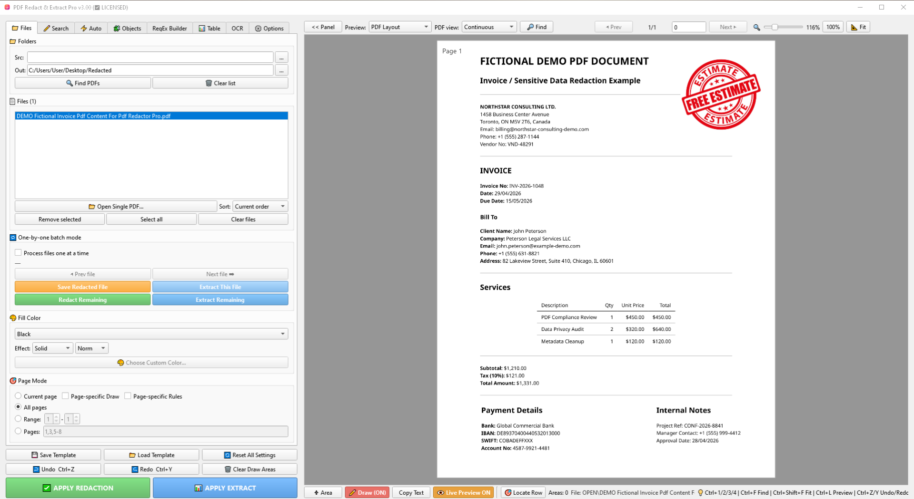
Quick Start
A reliable first workflow for a new document.
- Open a single PDF or add a source folder and build the file list.
- Choose the right rule type: manual Draw, Search, automatic detection, RegEx, Objects, or Table extraction.
- Turn on . For extraction, also switch Preview to when needed.
- Adjust rules until the overlays and Excel Preview show the intended content.
- Use or to create output files.
Fixed visual area
Use Draw. Choose Page-specific Draw if the rectangles differ by page.
Stable labels / values
Use Search and directional capture. Auto-fit can trim the result to found text.
Structured repeated rows
Use Table, define physical columns, then shape output with Split and Merge.
Files, Batch Queue and Page Mode
Choose what to process and where results are saved.
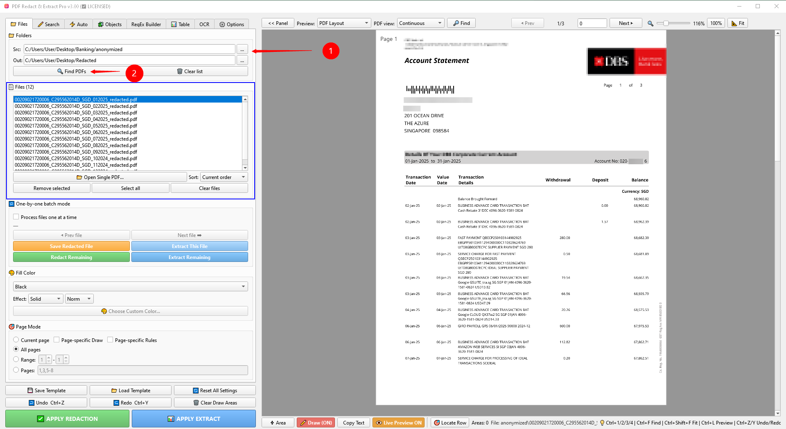
Batch queue
scans the source folder. loads one document directly. Removing an item from the list does not delete the source file.
One-by-one mode
Use Process files one at a time when each PDF needs inspection or different rules. The current file can be redacted or extracted before moving to the next item.
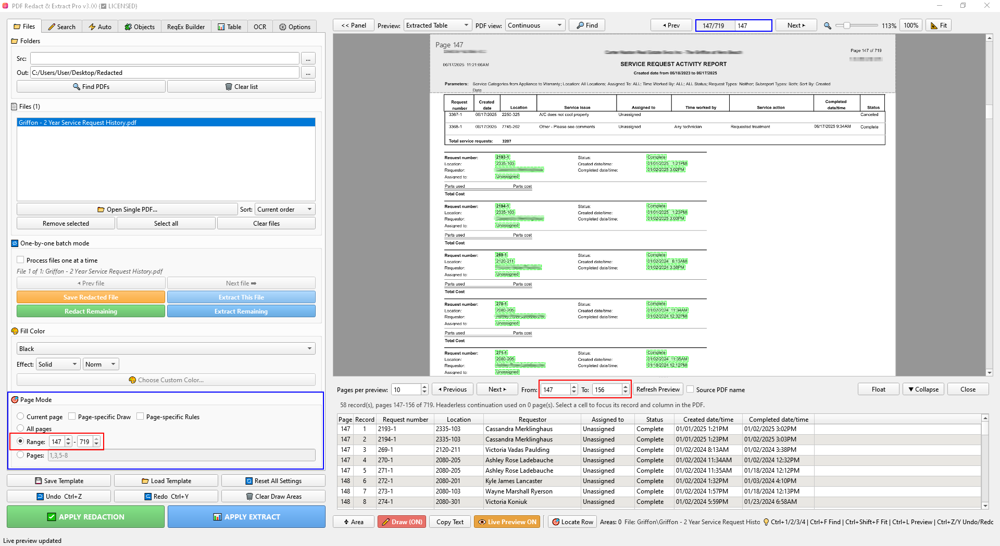
1,3,5-8.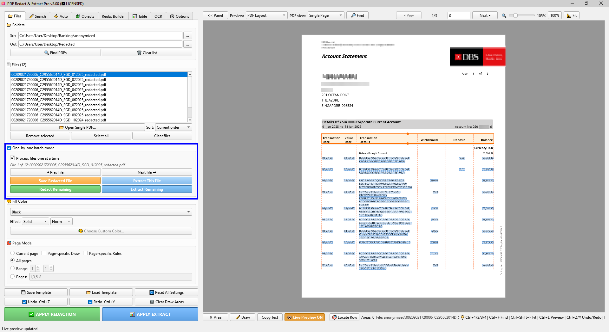
PDF Preview, Navigation and Manual Tools
The preview is the central verification surface.
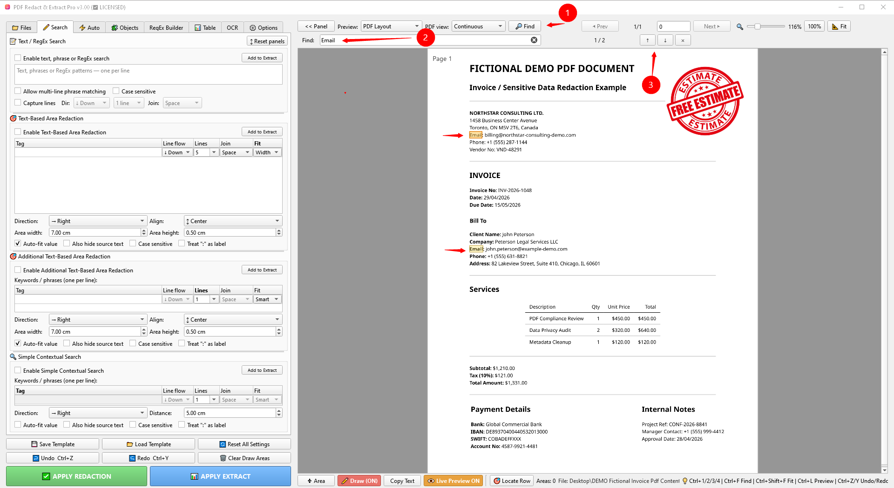
- selects and moves existing manual areas.
- creates manual redaction rectangles.
- selects text from the PDF text layer.
- toggles detection overlays.
- links a table record in the PDF with the corresponding Excel Preview row.
- Use Single Page or Continuous view. Zoom and Fit affect only the viewer, not the stored page-local Draw coordinates.
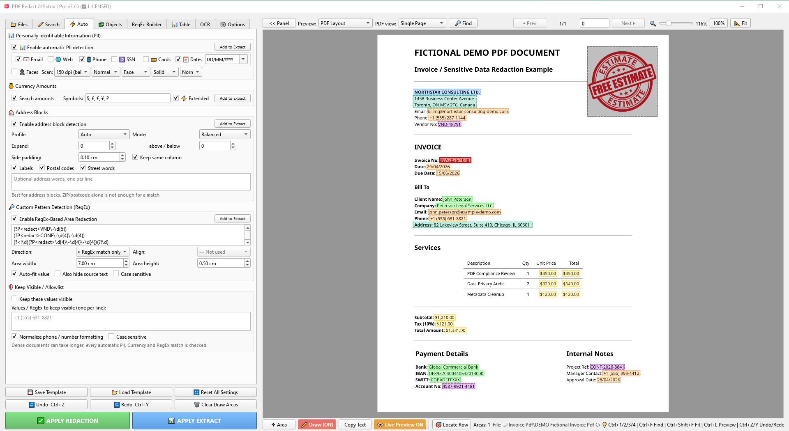
Search Tab
Find known text, labels and nearby values.
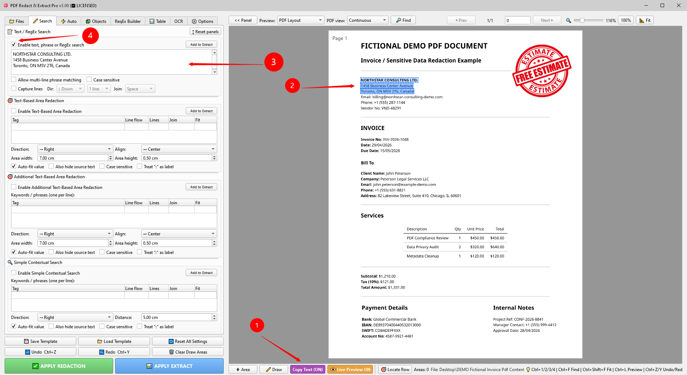
Text / RegEx Search
Use exact text, phrases or RegEx patterns. Enable multiline phrase matching when a known phrase is split across PDF lines.
Text-Based Area Redaction
Find a tag and capture an area Right, Left, Above or Below it. Area width/height define the search envelope when Auto-fit is off.
Additional Text-Based Area
A second independent text-area source that can be used for redaction or added to Table extraction output.
Simple / Advanced Context
Simple Context uses Distance around a keyword. Advanced Context supports multiple labels with independent capture profiles.
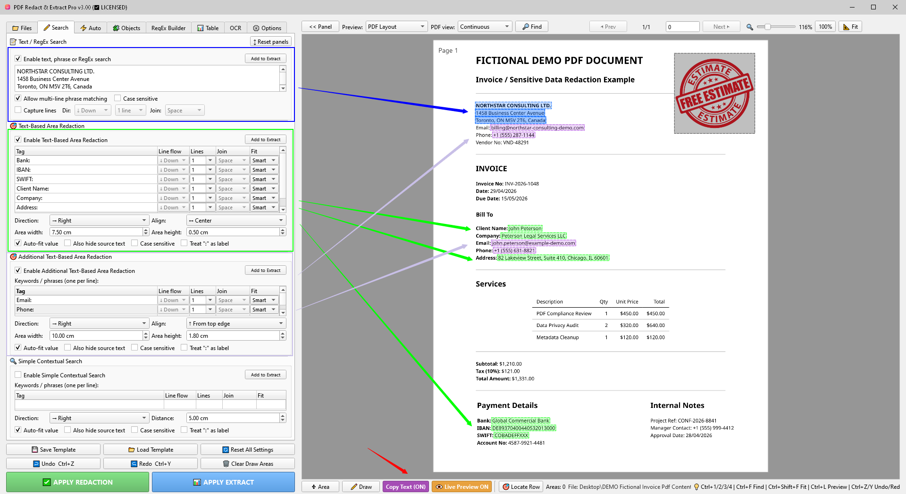
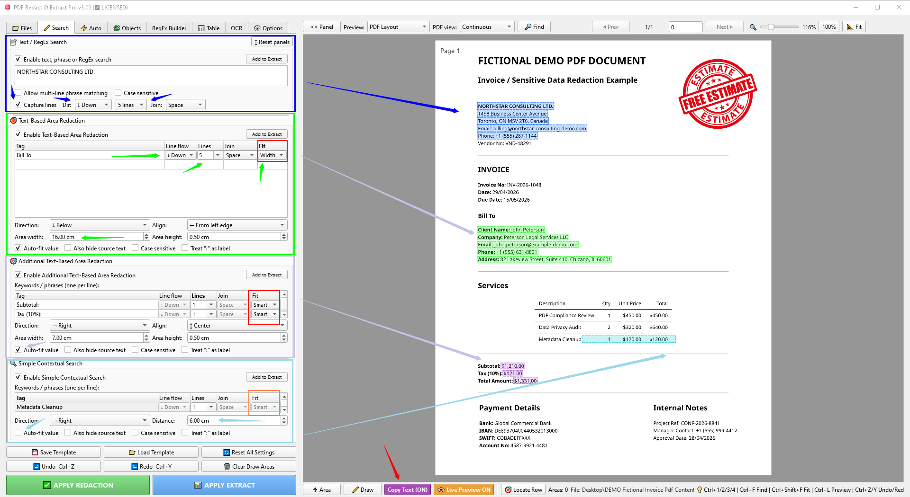
Auto-fit and Fit mode
Auto-fit value trims a captured area to detected text. The configured width still matters as the search envelope. Smart prefers a compact nearby value; Width searches across the configured width and then trims to the found text. Use Width when the value can extend far across the row.
RegEx Builder / Text Mask Generator v3.0
Build and test structured detection and selective-redaction patterns visually.
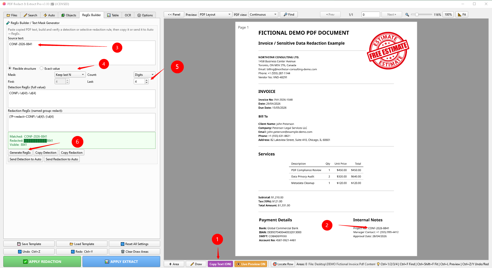
- Flexible structure generalizes variable digits or text while keeping the visible structure.
- Exact value escapes the supplied value for an exact-match pattern.
- Mask can redact the entire value or preserve selected leading/trailing characters.
- and copy the generated patterns.
- / move the generated rule into the automatic RegEx module.
Multiple source examples
When you paste multiple non-empty examples on separate lines, each line is treated as an alternative value. The generated Detection pattern joins them with RegEx OR (|) instead of forcing the examples to appear sequentially.
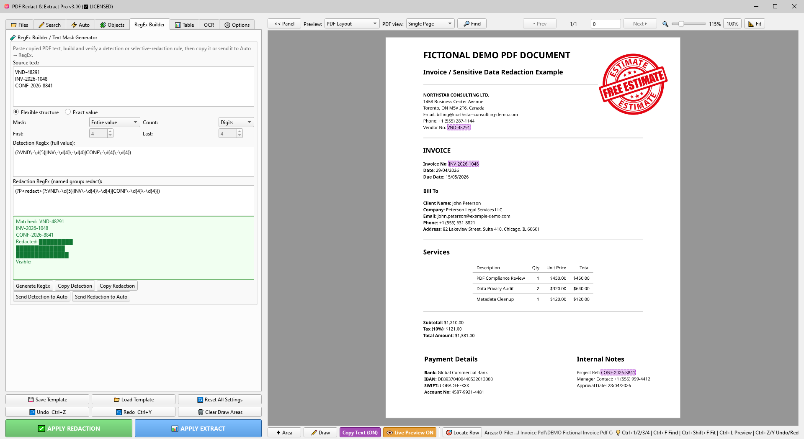
Auto Detection
Combine common detectors with manual and Search rules.
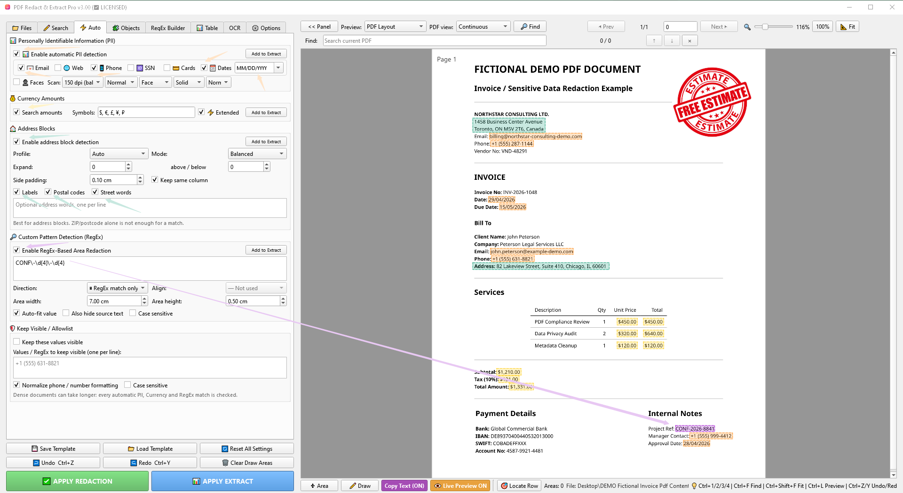
PII
Detect email addresses, web/phone-like values, SSNs, cards, dates and faces. Date formats can be constrained to reduce false positives.
Currency
Detect configured symbols and extended currency formats. Review short currency codes on dense documents.
Address Blocks
Use profile, detection mode, labels, postal codes, street words, expansion and same-column constraints.
Custom RegEx
Use document-specific patterns that are not covered by the built-in PII detectors.
Keep Visible / Allowlist
Protect approved values from automatic redaction; optional normalization helps with phone/number formatting differences.
Faces / Images
Face detection supports scan DPI, shape and masking effects. Image handling can hide or filter images separately.
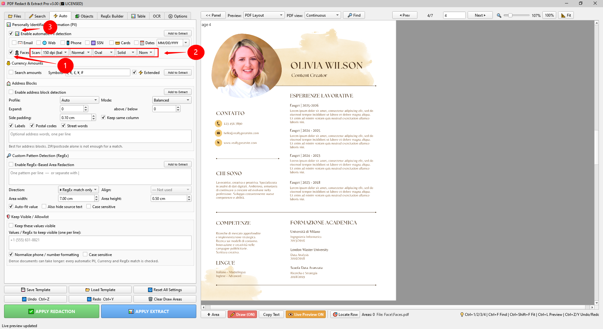
Objects and Visible Object Inspector
Inspect images and PDF objects that are not handled like normal text.
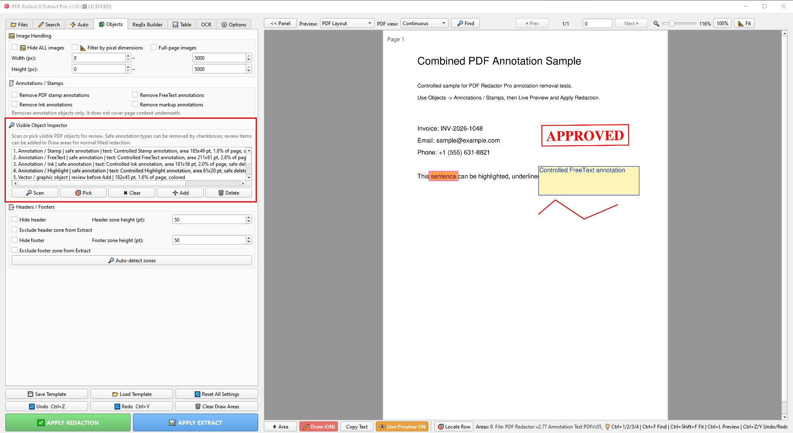
- Image handling can hide images or filter by size. Use full-page image handling only when intentionally working with image-based pages.
- Annotations / stamps are independent PDF objects and can often be removed without covering the page content beneath them.
- Visible Object Inspector provides Scan, Pick, Add, Delete and Clear actions for supported objects.
- Headers / footers can be excluded from extraction or hidden during redaction when the document repeats the same page furniture.
Page-specific Draw and Page-specific Rules Advanced
Use different manual areas or different rule profiles on individual pages of the same PDF.
Page-specific Draw
Only manually drawn rectangles become page-specific. Each Draw area belongs to the page where it was created and is not repeated on other pages.
Other active Search, Auto, PII, RegEx and detection settings continue to apply normally across the document. If those settings also need to differ from page to page, use Page-specific Rules.
Page-specific Rules
The rule settings themselves can vary by page. Use this mode when different pages require different Search, Auto, PII, RegEx, Table, extraction or other supported rule settings.
When you move to another page, the program saves the profile of the page you leave and restores the stored profile for the newly active page.
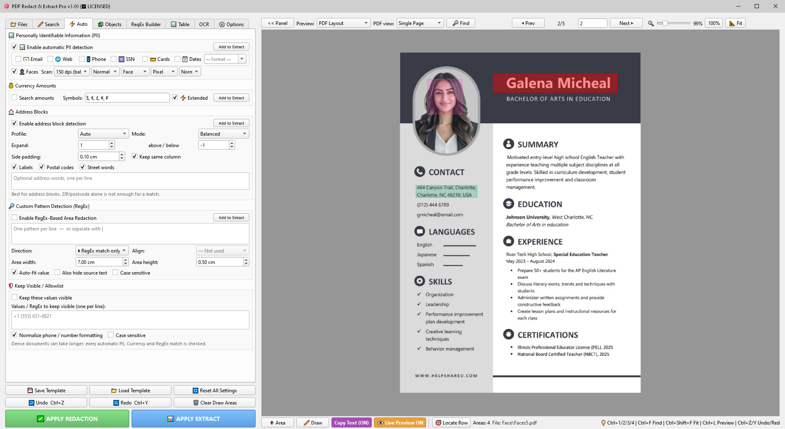
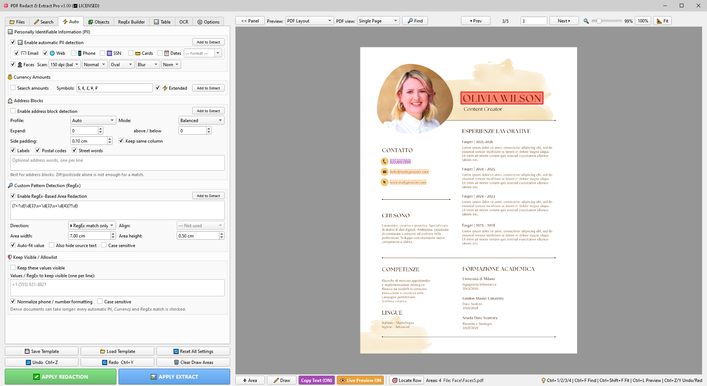
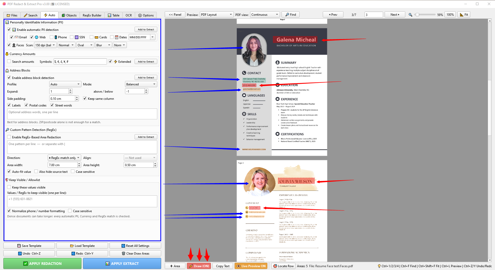
Table Workspace
Extract physical table columns and combine them with values captured elsewhere on the page.

Table Options
Choose row detection, key position, flow/layout behavior, start/end markers, header handling, continuation behavior and optional boundaries. Use these controls to tell the extractor where records begin and how table segments continue across pages.
Manual Table Geometry
Manual Table Geometry is one editing mode for the complete physical table shape. It owns the outer table area, the vertical column separators and the header divider shown in PDF Preview. Automatic detection can provide the initial geometry; enable Manual Table Geometry when you need to correct it directly.
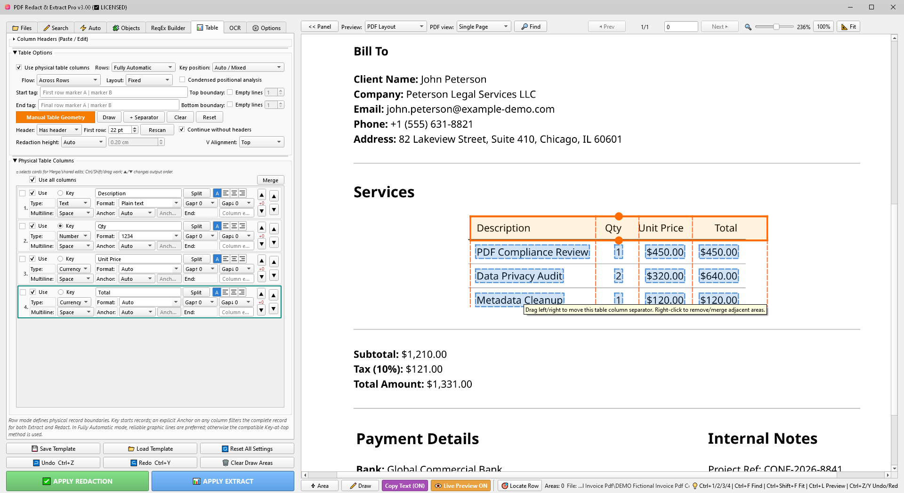
| Control | What it does |
|---|---|
| Manual Table Geometry | Enables direct editing of the physical table geometry. The orange horizontal geometry is reused on applicable pages; vertical table bounds are determined per page. |
| Draw | Drag a rectangle around the table body in PDF Preview. This rectangle belongs to Table extraction/redaction geometry; it is not a normal redaction rectangle. |
| + Separator | Click inside the orange table area to add vertical column separators. Repeat for every required column. Existing separators and outer boundaries can then be dragged. |
| Clear | Removes only the internal vertical separators. The outer table area and Header are kept. Physical cards collapse to the remaining first column and can be restored with Undo. |
| Reset | Resets the outer table area, Header band and all manual separators. Column-card configuration is retained; confirmation and Undo are available. |
| Rescan | Reads column captions and geometry again from the current manual area. Existing card settings are preserved when the column names still match. |
Header and First row
Has header
The configured First row height is treated as the column-heading band. It is used for column names and is not exported as a data record. You can also drag the lower edge of the header band directly in PDF Preview.
No header
The first row remains data. The physical columns use generic names such as Column 1, Column 2, and so on until you rename them.
First row is measured in points and defines the first-row/header band inside the manually drawn area. Continue without headers allows following pages without repeated headings to be accepted only after the program checks the Key column, column positions, configured data types and several matching rows.
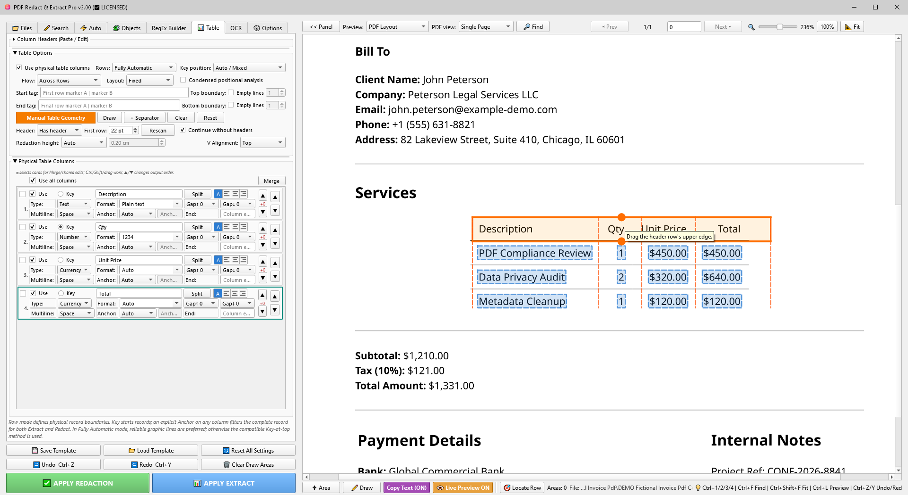
Page scope, Fixed and Auto Shift
Manual Table Geometry has one predictable document-wide geometry scope; there are no separate Reuse-up / Reuse-down controls in v3.0. The Page Mode on the Files tab still decides which pages are actually processed: Current page, All pages, Range or a custom page list.
Fixed
Reuses the same horizontal table position and column geometry on every applicable page.
Auto Shift
Keeps the same table shape and individual column widths, but may relocate the complete geometry when a matching header or strong typed-column structure is detected at a shifted position.
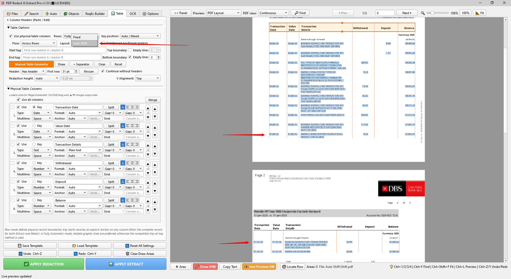
Physical Table Columns
Configure each detected column independently.
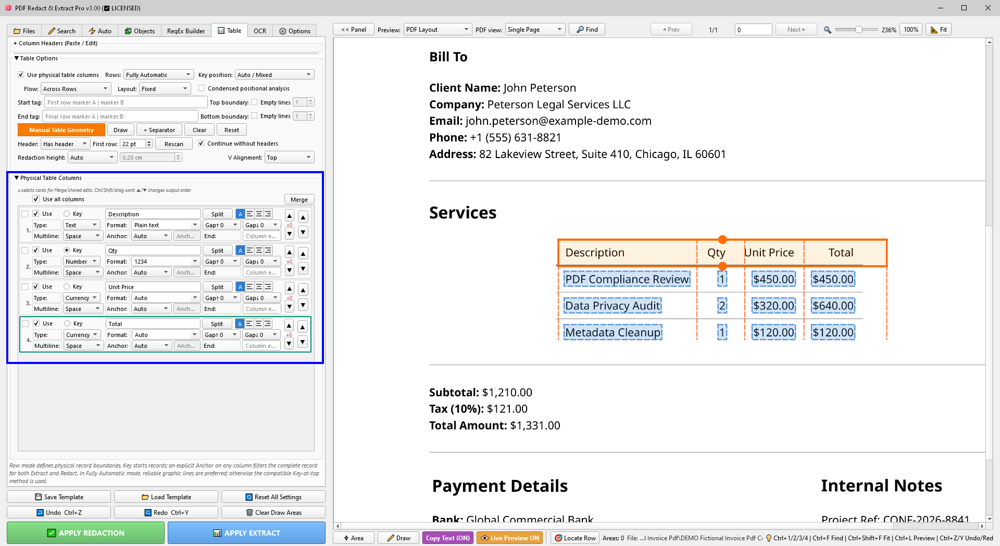
| Setting | Purpose |
|---|---|
| Use | Includes the column in output. |
| Key | Marks a field that can define/validate physical record boundaries. |
| Type | Text, Date, Number or Currency. Data types can filter invalid values during extraction. |
| Format | Controls final value formatting, including date/number formats. |
| Multiline | Controls how continuation lines are joined in the output. |
| Gap ↑ / Gap ↓ | Adjusts how nearby lines are assigned to the current record. |
| Anchor | Controls how the column is anchored to the record. |
| Alignment | Left, Center or Right alignment used by Excel Preview and final Excel output. |
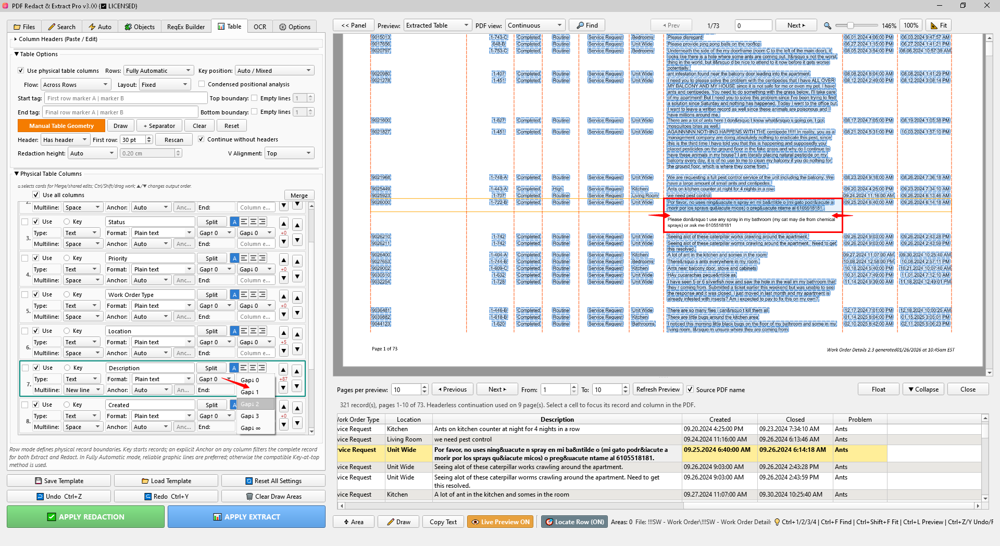
Add values outside the physical table
Search sources can be added to Extract and then displayed as cards below Physical Table Columns. This makes it possible to combine each table row with account numbers, periods, totals, customer data or other values located elsewhere in the document.
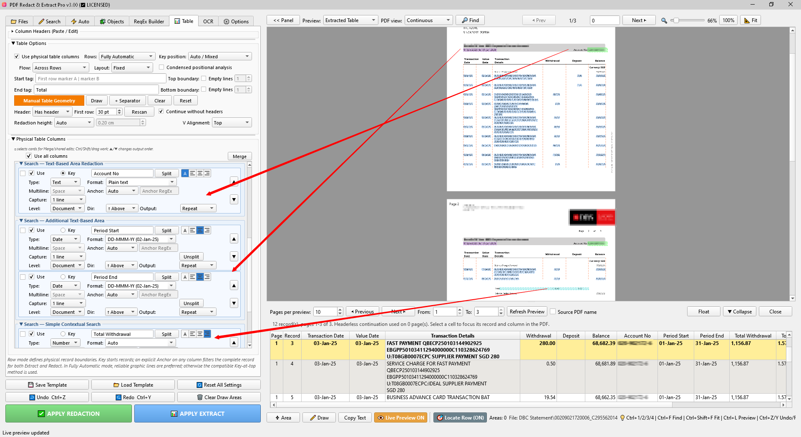
Split and Merge Output Fields
Transform captured values without changing the source PDF.
Split
Split one captured value into multiple output cards. Use literal separators, occurrences or visual-gap splitting depending on the source structure. Each child card can then have its own Type, Format, Key and alignment settings.
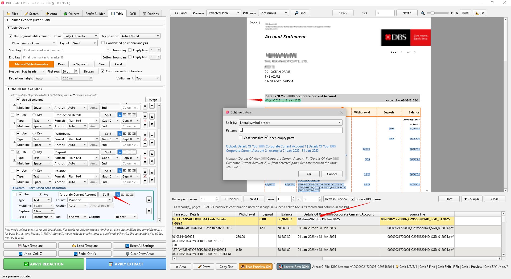
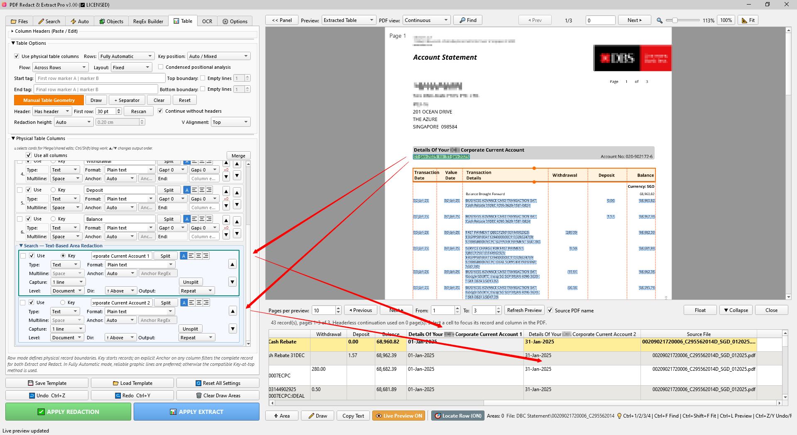
Merge
Select compatible output cards and use to combine related values into one output field. The merged card can be used like a normal output card, including as a Key. Excel Preview and final Excel output use the same merged value and order.
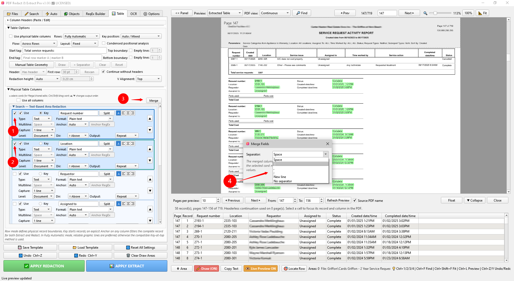
Excel Preview and Locate Row
Review the exact structured output before creating the workbook.
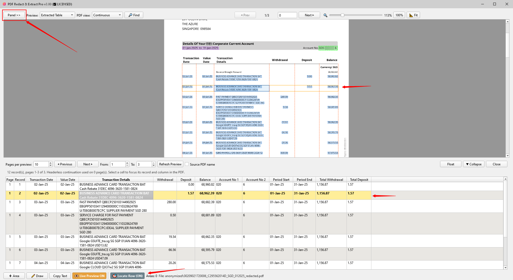
- Use Pages per preview, From/To and Refresh Preview to limit expensive preview work on long PDFs.
- Column order follows the configured output order, including Split and Merge fields.
- Column alignment reflects the alignment selected in the corresponding output card.
- Source PDF name/page columns can be included when required by the export workflow.
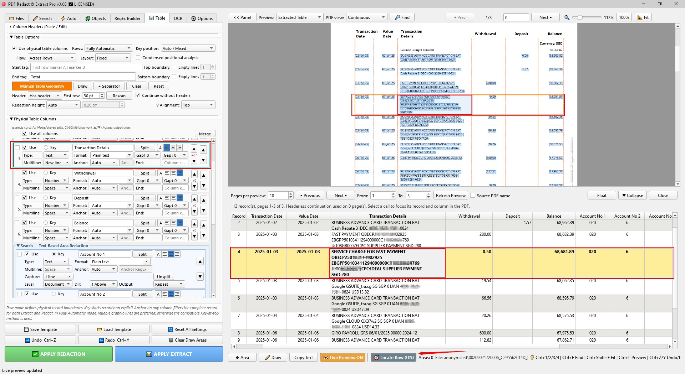
OCR for Scanned PDFs
Create searchable copies while preserving the page image whenever possible.
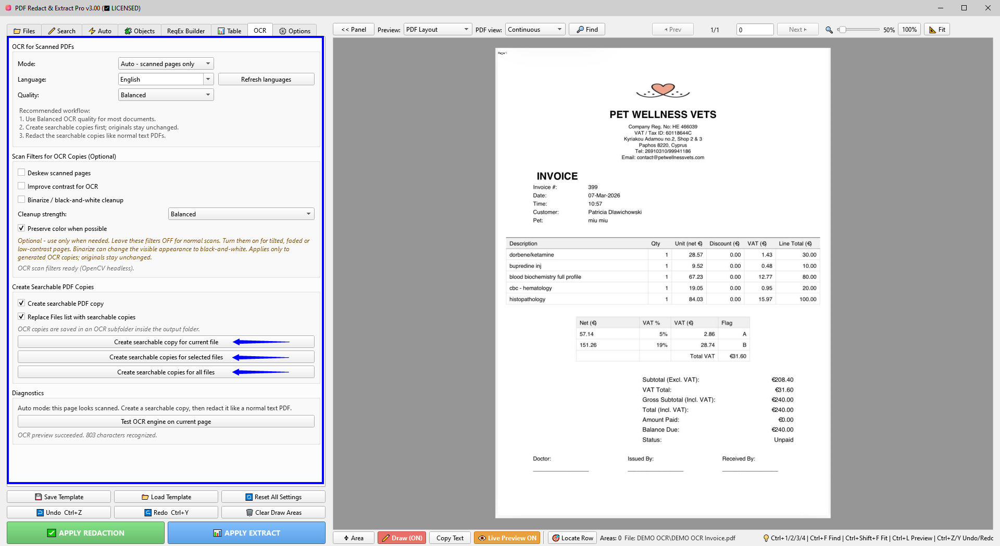
- Use Auto — scanned pages only for mixed documents unless you intentionally need a different mode.
- Choose the document language and Balanced quality for a normal first attempt.
- Create searchable copies for the current, selected or all files. OCR copies are saved in an OCR subfolder inside the output folder.
- If desired, Replace Files list with searchable copies replaces the entries in the application list — not the original files on disk.
- Run Search, Auto Detection or Table extraction on the searchable copies.
Optional scan filters
Deskew, contrast improvement and binarization can help poor scans, but may alter the visible appearance of generated OCR copies. Leave them off for normal scans and enable them only when recognition needs help.
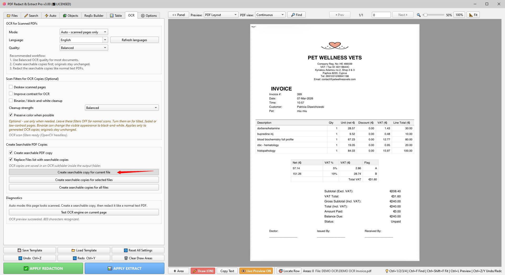
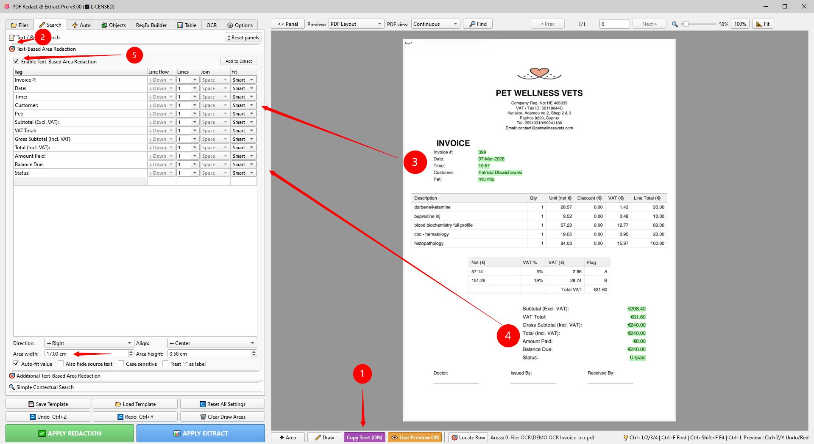
Templates and Presets
Reuse complete processing setups for recurring document types.
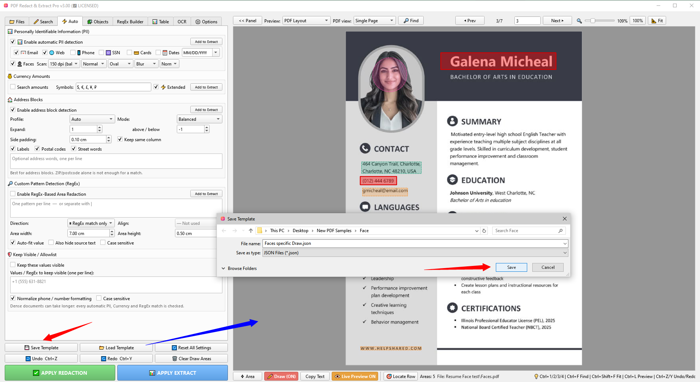
- Templates can include Search, Auto, OCR, Table extraction, Split/Merge output cards, page scope and other workflow settings.
- Stateful controls such as Auto-fit, Distance, case sensitivity, column alignment and Table output settings are restored with the template.
- Page-specific Draw areas and Page-specific Rules profiles are stored when those modes are used.
- Preset Templates in Options are editable starting points; use Save Template for your own exact reusable configuration.
Apply Redaction, Apply Extract and Output
Create the final PDF or Excel result after preview verification.
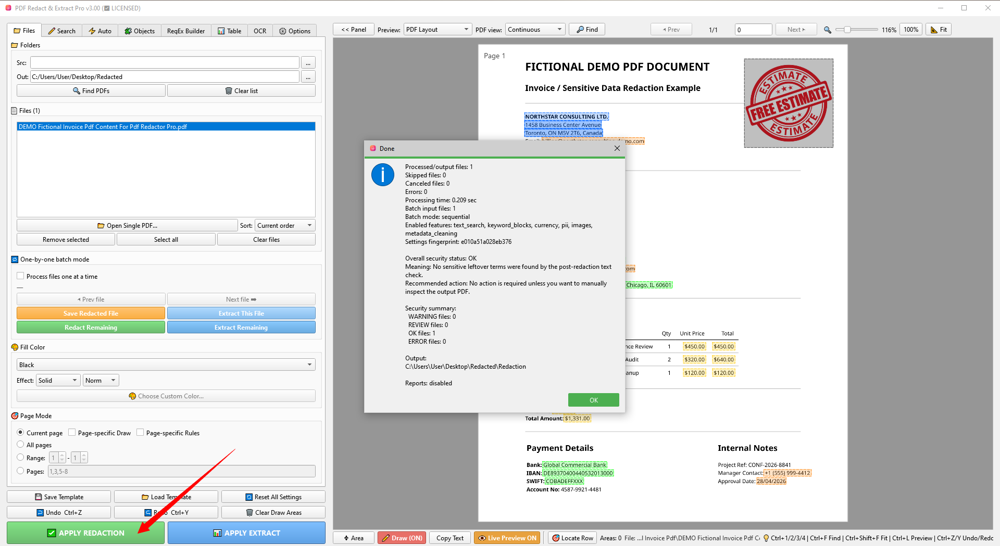
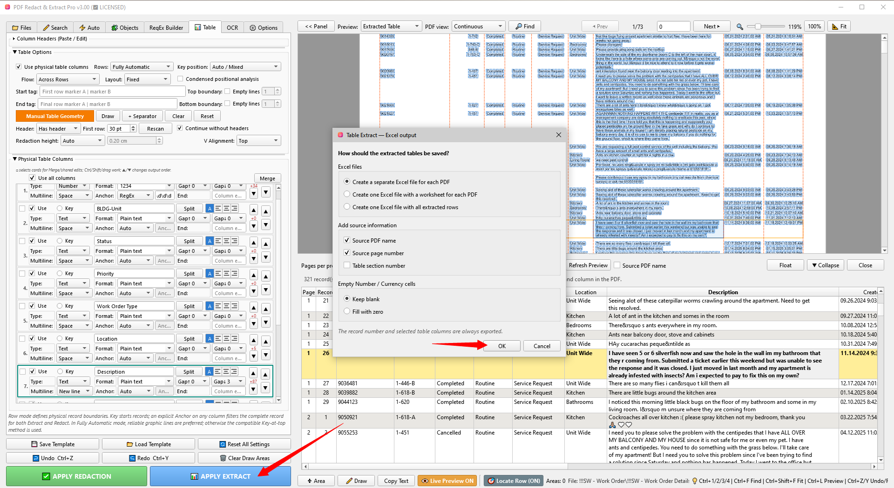
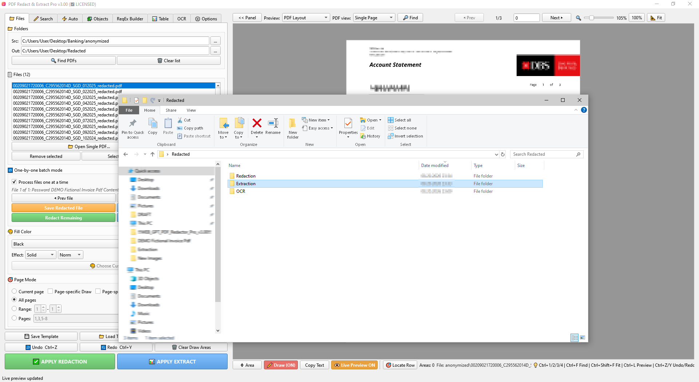
Options, Performance and Preview Colors
Control processing behavior, memory use and visual overlays.
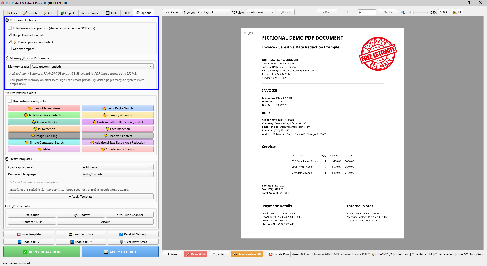
Processing
Optional extra lossless compression, deep clean hidden data, parallel processing and report generation can be enabled here.
Memory / Preview Performance
Auto is recommended. Lower memory protects older PCs; higher settings keep more previously visited PDF pages ready on systems with ample RAM.
Live Preview Colors
Enable custom overlay colors and assign a color for Draw, Search, Text-Based Area, PII, Faces, Tables and other detection types.
Help & Product Info
Open this local User Guide, Buy / Updates, the YouTube channel, Contact / Bulk or the About dialog.
Keyboard Shortcuts
Frequently used viewer and editing commands.
Password-protected PDFs and Licensing
Open protected documents without storing passwords in templates.
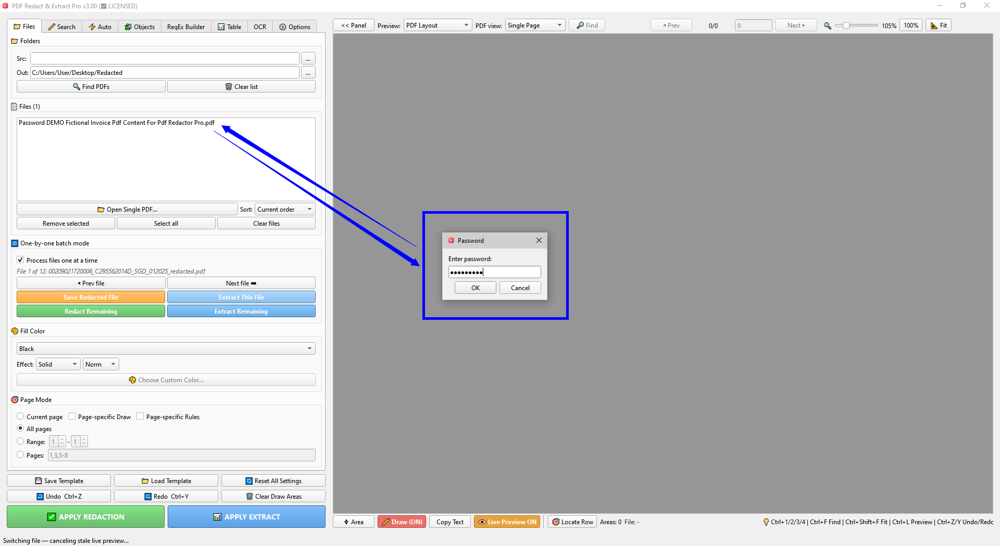
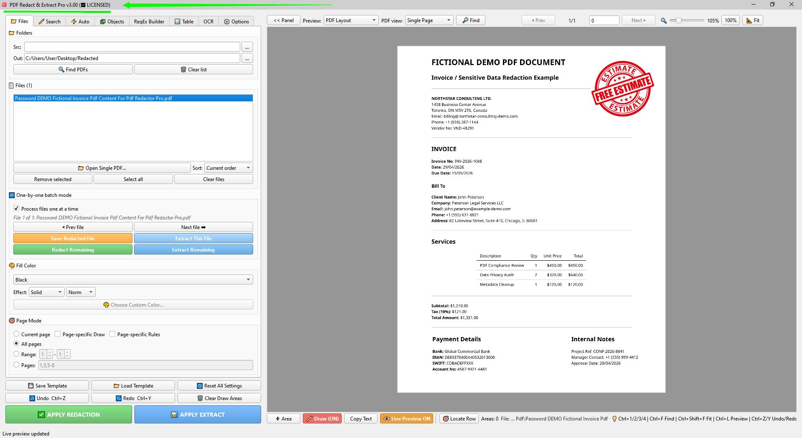
Troubleshooting
Common workflow checks before assuming a rule is broken.